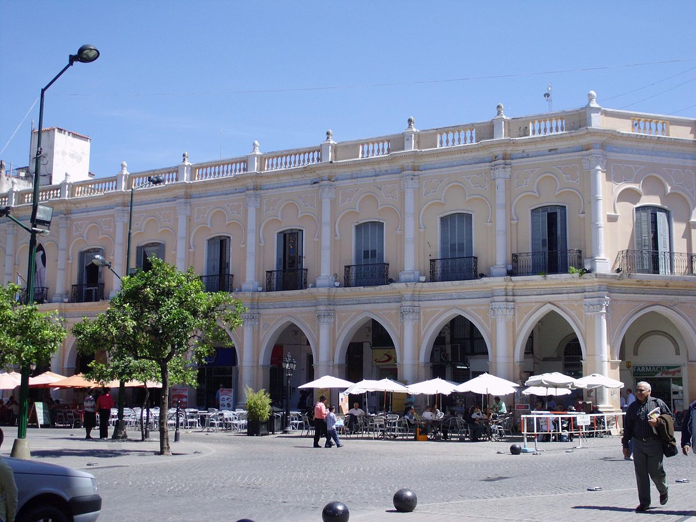

Museo de Arqueología de Alta Montaña (MAAM) - Salta
El MAAM fue inaugurado en 2004 y su fama internacional se debe en gran parte al descubrimiento de los Niños del Llullaillaco, tres niños incas momificados hallados en 1999 en la cima del volcán Llullaillaco, a más de 6.700 metros de altitud. Estas momias están increíblemente conservadas debido a las condiciones extremas del lugar, y son consideradas uno de los hallazgos arqueológicos más importantes del mundo.
Saber Mas
